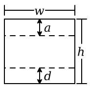

1 图形数据类型
pict 是一个代表图像的 pict 结构。 一些函数,如 hline, 创建新的简单图片。 其他函数,如 ht-append, 从现有的 picts 中建立新的 picts。 在后一种情况下,嵌入的图片保留了它们的身份,因此偏移量搜索函数,如 lt-find, 可以在一个更大的图片中找到一个嵌入图片的偏移量。
除了它的绘图部分,一个 pict 有以下的 bounding box 结构:

也就是说,边界框有一个宽度 w 和一个高度 h 。 对于单个文本行, d 是基线以下的血统, a+d=h 。 对于多条文本线(通常用 vc-append 这样的函数来创建), a 是顶线的上升, d 是底线的下降,所以 a+d<h 。 许多图片的 d=0 ， a=h 。
此外,一个图片可以有一个 last 的子图片,对应于最后一行文字的最后一项, 这样就可以在最后一行增加额外的行数。 特别是, last 元素对于向 Racket 代码块添加闭合小括号非常有用, 因为最后一行代码不是该块中最长的一行。
pict 的大小信息是在创建 pict 的时候计算的。 这个策略支持通过对现有图片的尺寸和形状进行任意复杂的计算来创建新图片的程序。 函数 pict-width, pict-height, pict-descent 和 pict-ascent 从 pict 中提取边界框信息。
通过 file/convertible 协议,pict 是一个可转换的数据类型。 支持的转换包括 'png-bytes, 'eps-bytes, 'pdf-bytes, 'svg-bytes, 以及诸如 'png-bytes+bounds 和 'png-bytes+bounds8 的变体。
pict 可以通过 racket/serialize 进行序列化, 但序列化会丢失子 pict 信息(只保留 pict 的绘图和边界框)。
Changed in version 1.2 of package pict-lib: 增加了对
'png-bytes+bounds,
'png-bytes+bounds8 和类似变体的支持。
Changed in version 1.3: 启用了序列化功能。
struct
(struct pict ( draw width height ascent descent children panbox last) #:extra-constructor-name make-pict) draw : any/c width : real? height : real? ascent : real? descent : real? children : (listof child?) panbox : (or/c #f any/c) last : (or/c #f pict-path?)
draw 字段以一种内部格式包含了 pict 的绘图信息。 大致上,绘图信息是一个过程,它接受 dc<%> 绘图上下文和pict左上角的偏移量 (即它的 bounding box 的左上角相对于 dc<%> 原点)。 dc<%> 的状态旨在影响 pict 的绘制;例如,钢笔和画笔将被设置为合适的默认绘制模式, dc<%> 的比例将被设置为所生成图像的比例。 使用 draw-pict (相对于 pict-draw) 来绘制图片。
panbox 字段是内部的,初始化为 #f 。
last 字段表示 children 列表中的一个 pict(过渡性的), 可以被当作 pict 中最后一行的最后一个元素。 一个 #f 值意味着该 pict 是它自己的最后一个子 pict 。
struct
(struct child (pict dx dy sx sy syx sxy) #:extra-constructor-name make-child) pict : pict? dx : real? dy : real? sx : real? sy : real? syx : real? sxy : real?
一个 child 结构通常不会直接用 make-child 来创建。 相反,像 hc-append 这样的函数在组合图片以创建一个新的图片时,会创建 child 结构。
procedure
(explain p [ #:border bord #:ascent asc #:baseline base #:scale s #:line-width lw]) → pict? p : pict-convertible? bord : (or/c #f string? (is-a?/c color%)) = "firered" asc : (or/c #f string? (is-a?/c color%)) = "seagreen" base : (or/c #f string? (is-a?/c color%)) = "royalblue" s : real? = 5 lw : real? = 1
Added in version 1.10 of package pict-lib.
procedure
(explain-child p path ... [ #:border bord #:ascent asc #:baseline base #:scale s #:line-width lw]) → pict? p : pict-convertible? path : pict-path? bord : (or/c #f string? (is-a?/c color%)) = "firered" asc : (or/c #f string? (is-a?/c color%)) = "seagreen" base : (or/c #f string? (is-a?/c color%)) = "royalblue" s : real? = 5 lw : real? = 1
> (define t1 (text "ij")) > (define t2 (text "ij")) > (define t3 (vl-append t1 t2)) > (explain-child t3 t3)
> (explain-child t3 t1) > (explain-child t3 t2) > (explain-child t3 t1 t2)

Added in version 1.10 of package pict-lib.